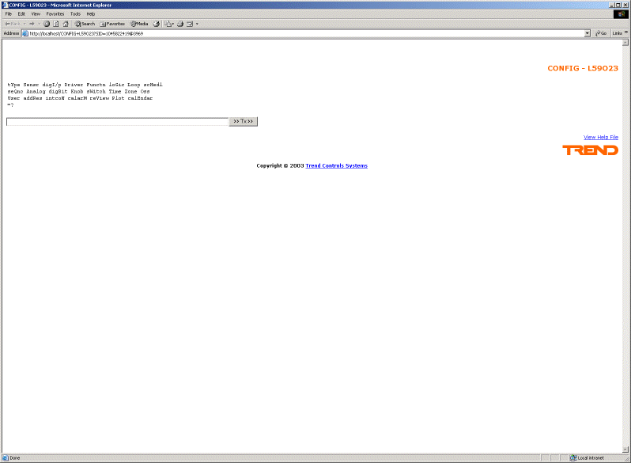

Konfigurationsdisplay, som vist nedenfor, giver adgang til Konfigurationsfunktion af bestemte Trend-enheder. Med denne funktion kan enkle justeringer foretages til strategien. Når der konfigureres, kommer alle skærmprompter fra undercentralen, og alle indtastninger sendes til undercentralen, når der trykkes på ‘>>Tx>>’.
